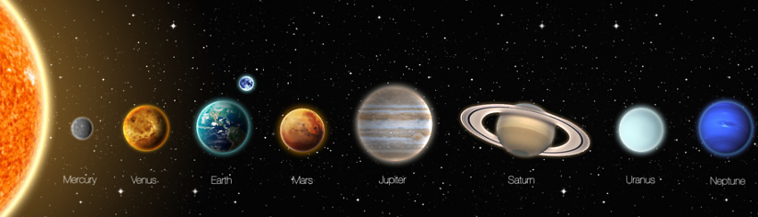
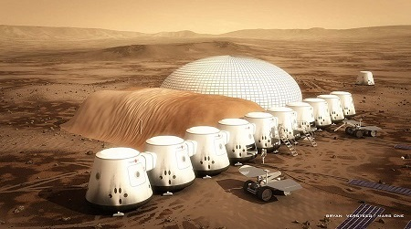
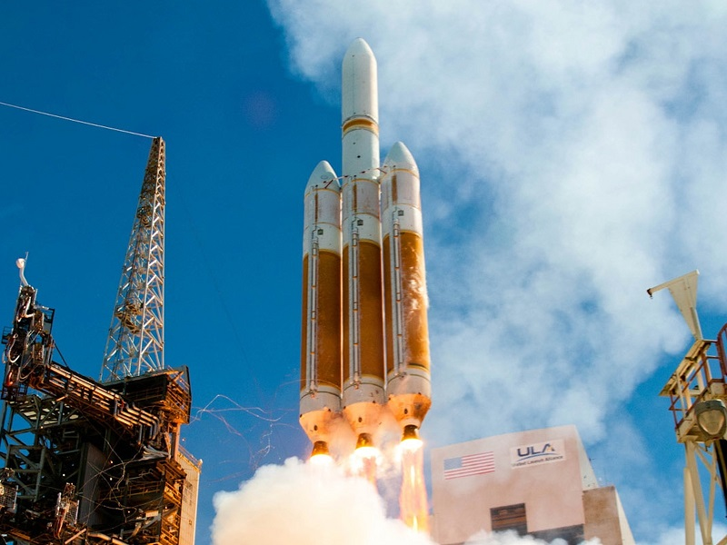
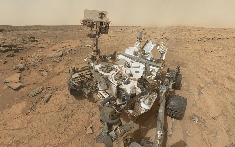

ake the fourth planet from the Sun and head straight til next year. As magical as it sounds, it is logistical nightmare for those wishing to travel to the Red Planet. If it was as simple as a fairy tale was, we would be there.
Mars is no 'Neverland', it is a much more harrowing adventure than many believe it to be, however just like Peter, perhaps the dreams we plan will really come true.
With a reddish tint due to the iron oxide found within its rocky soil, Mars is a terrestrial planet with a thin atmosphere, having surface features reminiscent both of the impact craters of the Moon and the valleys, deserts, and polar ice caps of Earth. Due to Mars being further from the sun at 136 Million miles compared to Earths distance of 92 million miles away, it is much colder and takes 668 days to revolve around the sun.
Illustration of our solar system, Earth is in a so called "goldilocks zone" which means we have the corect requirements for life, mars is much further from the sun, so any water it may contain is locked away in ice
Humanity has been obsessed with space for as long as can be remembered. We have used the stars to tell when it was best to grow food, and to chart maps for exploration.
It took quite a bit of time until we finally could see with clarity into the rest of our system
Telescopes brought the ability to clearly see the objects that inhabited our solar system. Once we learned that there was a new land to explore, we couldnt wait to find what was out there. Today the space around Earth is filled with satellites, allowing near-instant communication across the planet. Robotic scouts scour the rocky bodies that we have always looked to, and our hopes now are to live and prosper on these far-away lands.
One such dreamer is Bas Lansdorp, a Dutch entrepreneur who started Mars One with the stated goal of landing on Mars by 2025, 5 years earlier than NASA’s expected date, 2030. The venture claims to have a business plan that could pay for everything the trip would need, reality TV. The voyage would be a huge spectacle, as Landsdorp tells, “We expect it’s worth up to 10 Olympic Games of media revenue, which is 45 billion U.S. dollars”. He’s not alone in this, 100,000 other volunteers have signed up to go to Mars and never return. 
Many other private companies are also wishing to go to Mars, notably SpaceX, who have pioneered rocket engineering in an attempt to make space travel affordable.
Support for a Mars colony has been growing on all sides, even in a badly divided congress (Kaufmann). I think many in the space community believe NASA's planning for a set of missions to ultimately get us to Mars has become more coherent and consolidated," says John, Logsdon, a professor emeritus at George Washington University's Space Policy Institute.
It is important that a plan is laid out, as the more that people can stick to it, the greater a chance that a long term path is carved out
Mars is undoubtedly the next goal for space exploration, and recently Mars exploration has become much more affordable, with a 20 year program estimated to be around 80 – 100 billion dollars (Kaufman). For reference, the Apollo program that put a man on the moon costs 200 billion dollars in today’s money. Harley Thronson, one of the experts that helped estimate that cost, explains that, “NASA and space companies have gotten better at building and operating rockets for less money”.
This is NASA's new Delta heavy rocket, the Delta class rockets are an expendable rocket design with 5 versions, this one being the heaviest. These are a complete new design, unlike recent rockets and are made to cover an arry of different payloads and time schedules.
While this may sound all well and good, there is still skepticism. NASA is on its lowest amount of budget since it was first reduced in 1999 and has had to make tough decisions across the board (NASA). One such cut came to the 2020 Mars rover, which was reduced to 1.5 billion compared to the Mars Curiosity rover being 1.8 billion.
Many scientist have been arguing the case against sending manned missions, especially in a world that is increasingly embracing smart cars, drones, and E-sports (Kaufman). Giulio Varsi, Thronson’s former deputy at NASA even argues that there is no need to even leave earth with such technologies and that “remote-controlled missions are clearly the way to go”. There is a strong case to be made for this, especially since such arguments are brought about by the sheer costs of a manned mission (Kaufman).
Mary Lynne Dittmar, an aerospace consultant in Washington, D.C, explains that: “The distances that are involved and the complexities that are involved in going and staying are really enormous”. Aside from nourishment and oxygen, sending people to Mars is also morally questionable. The physical health effects linked to a life in low gravity are slowly being understood.
Low gravity has been linked to muscle, bone and heart degeneration (Querna). Without completing vigorous exercise throughout the journey, an astronaut returning to Earth would likely have heart problems, as now their body is too weak to pump blood due to the return to Earth’s gravity.
Gary Marin, the director of advanced programs for NASA explains that, “Being away from Earth for three years would mean that every cell of your body would be transversed by a galactic ray, and we just don't know what that would do to people."
Physical ailments are not the only issue for space explorers. Living only with a handful of people very far from any other social interaction many mental ailments can occur. Mental health is a much more difficult issue since there is even less known apart from the obvious hazard it presents. , but mental as well. The effects of prolonged isolation are varying, but never good.
In the case of Martians and Astronauts, they would be sufficiently trained to not go insane when alone, Assuming any of these issues were to arise, the current method of travel, chemical rockets, would not be able to carry enough fuel to simply turn around.
Rovers have the obvious advantage, they do not require food, water, oxygen, or even an atmosphere. The only ailments that could occur is a malfunction or breakdown of the rover, which is highly unlikely given how current rovers are still operating today. Yet our goal is not to simply create entire droves of robots to scour the planet’s surface, it is simply to create a colony for man.
JFK’s moon speech is the most eloquent way to explain why: “We choose to go to the moon in this decade and do the other things, not because they are easy, but because they are hard.” This philosophy has and forever will hold true for man. Despite all of the pros and cons, we still desire to put our footprint in the sands, to conquer that which has been untouched, and accomplish that which has not been done.